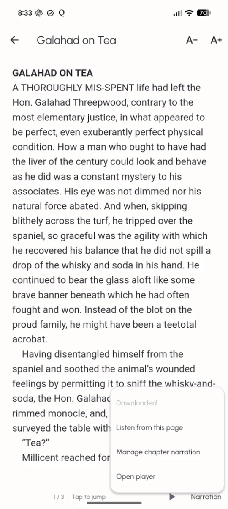
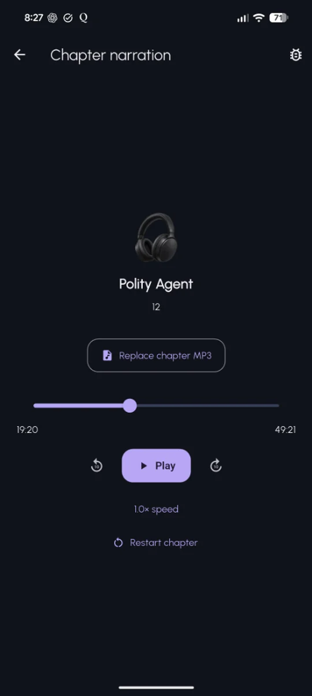
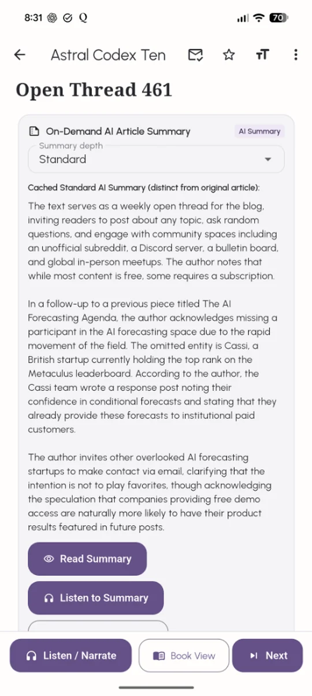
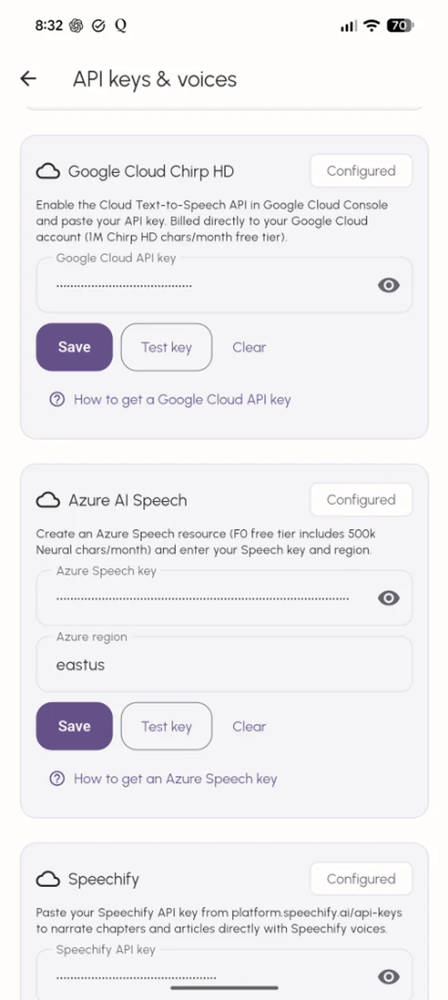

EPUBs, RSS & Web Articles
Import your own DRM-free EPUB books, subscribe to RSS feeds, or clip articles with clean typography and preserved scene breaks.
Dogreader is a calm, private EPUB and article reader for Android with built-in offline neural narration — plus optional bring-your-own-key support for Google, Azure, Speechify, and Gemini.




Import your own DRM-free EPUB books, subscribe to RSS feeds, or clip articles with clean typography and preserved scene breaks.
Download the on-device Kokoro voice pack once and narrate chapters completely offline with zero subscription or internet required.
Optionally add your own Google Cloud Chirp HD, Azure AI Speech, or Speechify API key with built-in setup guides and Android Keystore encryption.
Read silently, start listening right from the paragraph you're on, and jump back to reading when you take your headphones off.
Plug in your own free-tier Gemini API key to generate concise summaries of long articles on your shelf.
No accounts, no ads, no analytics, and no Dogreader servers. Your books, progress, audio, and keys stay strictly on your phone.